Manual de usuario: encuentra negocios locales, detecta quién necesita una web o automatización, contáctalos, haz seguimiento y cierra con una demo y una propuesta.
Guía rápida para el equipo de la agencia · noviembre 2026 · v7
Es una herramienta web interna para prospección comercial. Escribes una zona y un tipo de negocio (nicho) y la app te muestra los negocios reales de Google Maps, indica si tienen página web propia, cuánto potencial comercial tienen y, cuando se encuentra, su correo electrónico. Después prepara mensajes de venta personalizados, te recuerda a quién escribir cada día, te ayuda a agendar la demo y a enviar la propuesta.
Negocios por zona y nicho, con teléfono, web, correo, reseñas y puntaje.
Velocidad real de la web, diagnóstico en lenguaje simple y servicio recomendado.
Compara categorías de una zona para saber cuál conviene atacar primero.
Mensaje de WhatsApp y correo con tu oferta y el enlace de ReservasIA, en cuatro pasos.
La lista de a quién escribir hoy: demos, respuestas, seguimientos y primeros contactos.
Agenda la demo, envía la propuesta con precios y comparte tu tarjeta digital.
Embudo de ventas con estados, notas, fechas y exportación a Excel, PDF y CSV.
Todo lo que hiciste con cada negocio y qué mensajes funcionan mejor.
Tu perfil, plantillas, precios, tarjeta, avisos y la copia de seguridad.
A la izquierda (en el celular, en el botón ☰) está el menú con las seis secciones (Buscar, Ficha del negocio, Radar de nichos, Mis leads, Historial y Ajustes) y, abajo, el medidor de cuota mensual. A la derecha se muestra la sección activa.
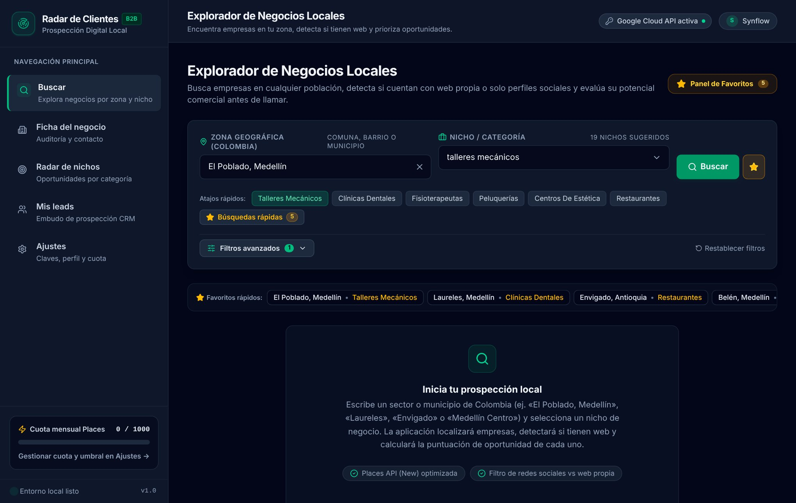
Todas las capturas de este manual usan negocios y datos de ejemplo, no clientes reales.
Radar de Clientes se instala como una aplicación, con su icono y en pantalla completa; es la mejor forma de usarla en el celular.
| Dispositivo | Cómo instalarla |
|---|---|
| Android (Chrome) | Pulsa Instalar en el aviso que aparece, o en ⋮ → Instalar app. También hay un botón «Instalar app» en el menú. |
| iPhone (Safari) | Pulsa Compartir y luego Añadir a pantalla de inicio. |
| Computador (Chrome o Edge) | Pulsa el icono de instalar en la barra de direcciones. |
En el menú lateral entra a Buscar.
El campo Nicho / Categoría despliega 19 nichos sugeridos. También puedes escribir cualquier otro nicho y buscarlo. Los 14 originales son talleres mecánicos, clínicas dentales, fisioterapeutas, peluquerías, centros de estética, restaurantes, gimnasios, academias, inmobiliarias, reformas, veterinarios, autoescuelas, ópticas y gestorías. Se sumaron cinco nichos de negocios de barrio, donde es más común el temor a la tecnología y la oportunidad de digitalización es mayor:
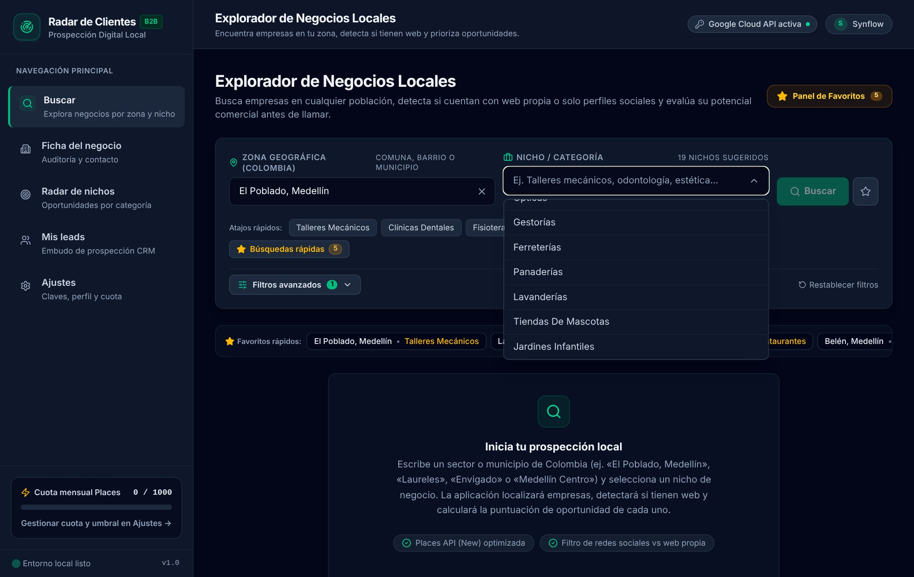
| Nicho nuevo | Qué puedes ofrecerles |
|---|---|
| Ferreterías | Catálogo digital con cotizaciones por WhatsApp. |
| Panaderías | Pedidos y encargos de tortas por WhatsApp con respuestas automáticas. |
| Lavanderías | Agente de WhatsApp para recogida, estado del pedido y cotizaciones. |
| Tiendas de mascotas | Catálogo con pedidos y domicilios, y recordatorios de compra. |
| Jardines infantiles | Sitio web con inscripciones y atención de padres por WhatsApp. |
Cada tarjeta resume un negocio: categoría, nombre, puntaje de oportunidad, dirección, correo, valoración y presencia web. Abajo tiene botones para llamar, abrir WhatsApp, abrir su web y guardarlo.
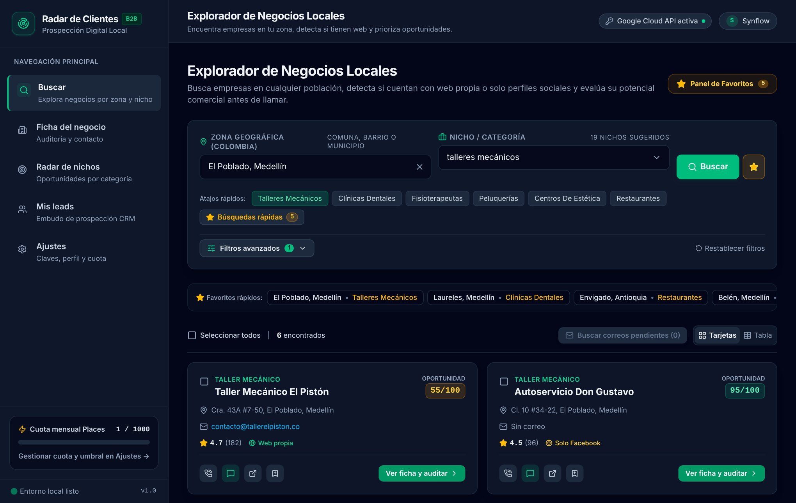
Cambia a Tabla para comparar muchos negocios de un vistazo, con una columna por dato.
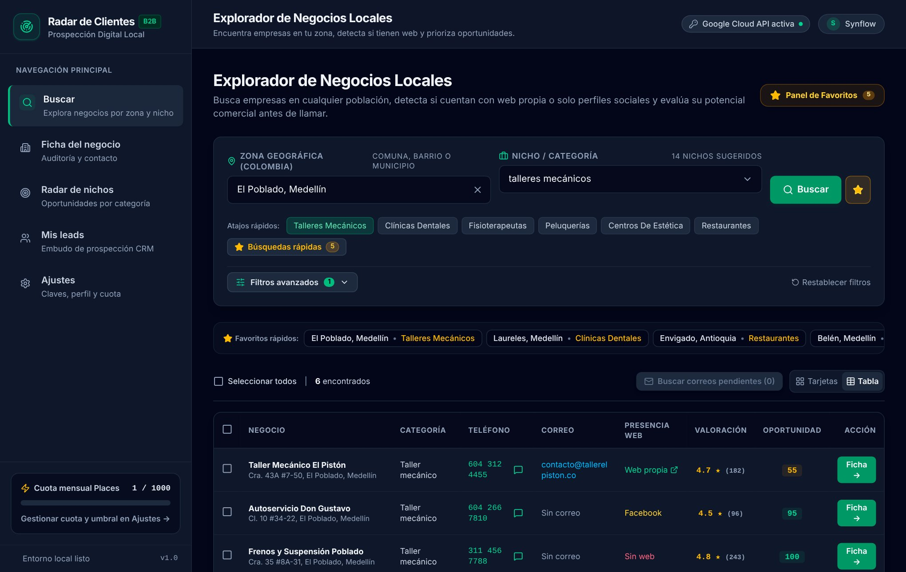
| Dato | Qué significa |
|---|---|
| Teléfono | Llamada directa y botón de WhatsApp con un clic. |
| Correo | Correo público de contacto con enlace para escribir. Ver sección 03. |
| Presencia web | Web propia, solo red social o directorio (Instagram, Facebook, Doctoralia…) o sin web. |
| Valoración | Estrellas de Google y número de reseñas. |
| Oportunidad | Puntaje de 0 a 100. Más alto = mejor prospecto. |
Marca varios negocios con la casilla (o Seleccionar todos) y pulsa Guardar seleccionados en mis leads.
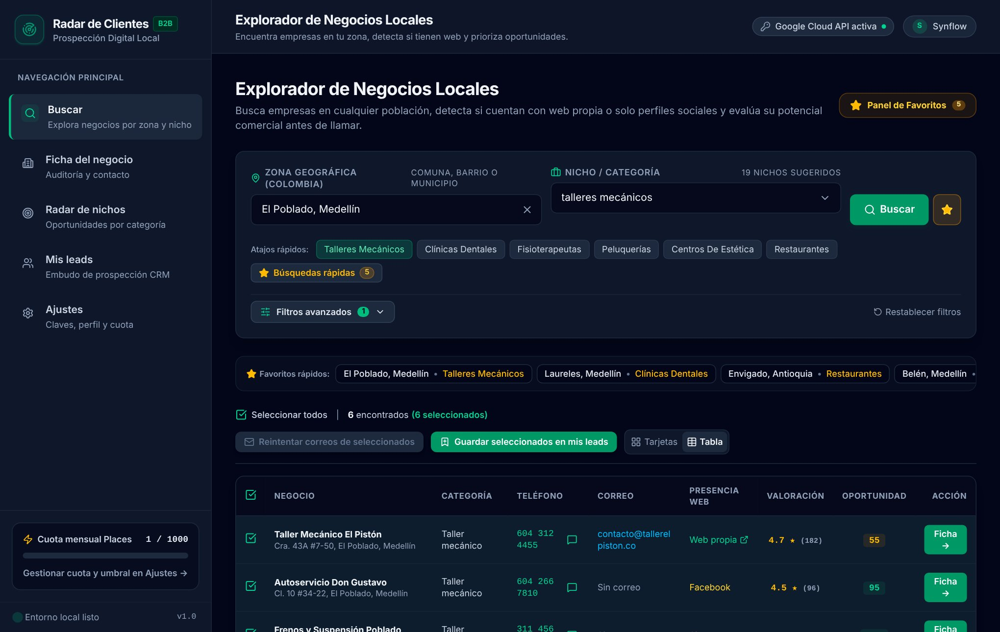
| Suma puntos | Resta o no suma |
|---|---|
| Sin web (+40 preliminar) o solo red social (+30) · muchas reseñas · buena valoración · tiene teléfono para contactarlo | Tiene web propia · pocas reseñas · sin teléfono |
El puntaje de la búsqueda es preliminar. Se afina cuando analizas la ficha del negocio.
Google Maps no entrega correos, así que la app los busca con Gemini (IA). Esto ocurre automáticamente después de cada búsqueda, en segundo plano.
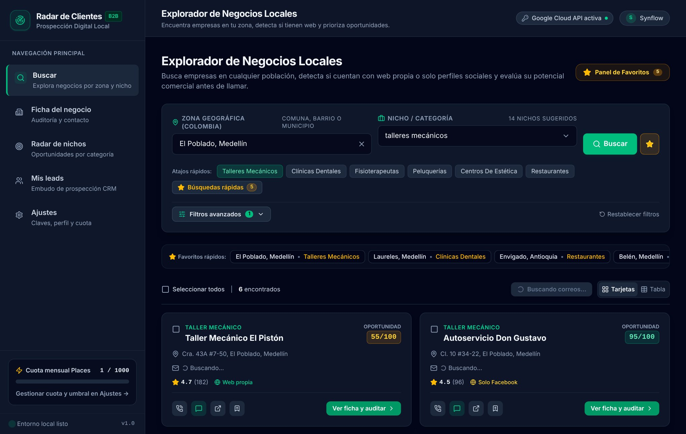
| Caso | Probabilidad de encontrar correo |
|---|---|
| Con web propia | Buena. Es donde más aparece. |
| Solo Facebook o Instagram | A veces, si lo publicaron en el perfil. |
| Sin presencia web | Baja. Casi siempre saldrá «Sin correo»; usa WhatsApp o llamada. |
Desde cualquier resultado pulsa Ver ficha y auditar (tarjetas) o Ficha (tabla). La ficha reúne todo lo del negocio y prepara tu mensaje de venta.
Pulsa Analizar web ahora. La app mide la web (velocidad en móvil, SEO, accesibilidad, buenas prácticas) y la IA revisa si tiene HTTPS, WhatsApp, reservas online y formulario. Si no hay web propia, analiza el negocio por su categoría y reputación. Las cuatro notas de velocidad son mediciones reales de Google PageSpeed; el análisis tarda entre 15 y 40 segundos. Si Google no puede medir el sitio, la ficha explica el motivo y puedes pulsar Volver a analizar. Arriba verás la puntuación de oportunidad y los botones para llamar, abrir WhatsApp, abrir la web y ver Google Maps; también puedes exportar la ficha en PDF.
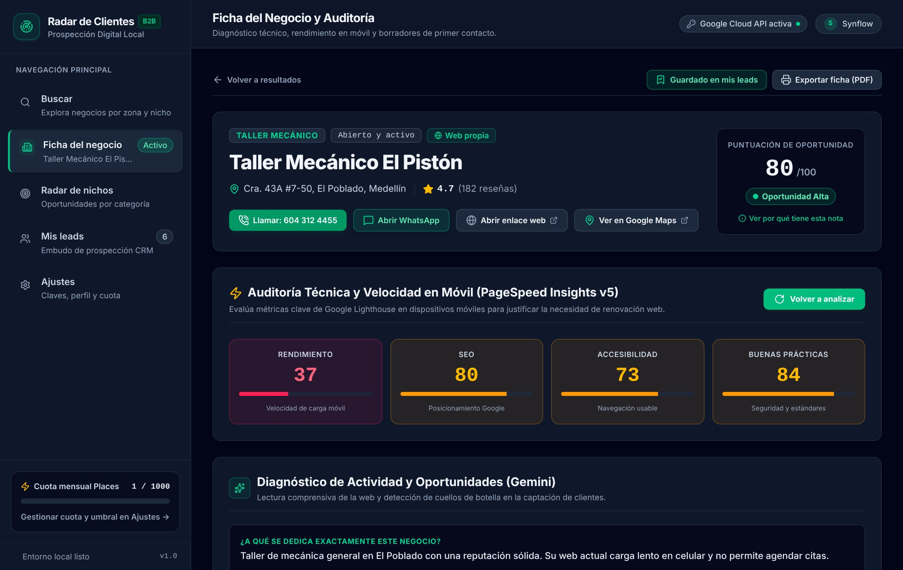
El resultado incluye las señales de desactualización, los problemas explicados en lenguaje simple (para contárselos al dueño sin tecnicismos) y el servicio recomendado: web nueva, agente de WhatsApp o sistema de citas.
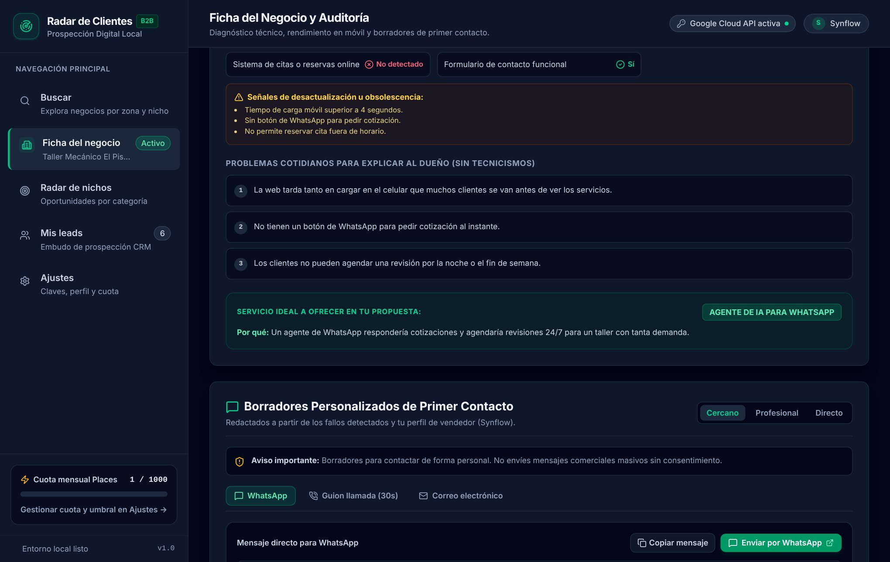
Amable y directo, para negocios pequeños y familiares.
Formal, para clínicas, inmobiliarias y empresas.
Va al grano, con los puntos clave.
| Canal | Qué obtienes |
|---|---|
| Mensaje armado con los datos del negocio, tu oferta y el enlace de ReservasIA. Enviar por WhatsApp abre el chat con su número. Ver capítulo 07. | |
| Guion de llamada | Texto de 30 segundos para presentarte por teléfono. |
| Correo electrónico | Asunto y cuerpo del paso que toca; se abre en tu correo o en Gmail. |
Revisa y ajusta siempre el texto antes de enviarlo. Más abajo, la sección Seguimiento con el negocio reúne el resto de herramientas: El negocio respondió, Agendar demo, No contactar, las respuestas rápidas, la Hoja para visita y la Propuesta con precios (capítulos 07 y 08).
Al final de la ficha, en Seguimiento y Registro Comercial (CRM), guarda la fase del embudo, la fecha de próxima acción y tus notas privadas, y pulsa Guardar cambios del lead.
Compara varias categorías de una zona para decidir en cuál enfocarte antes de buscar. Escribe la zona, marca las categorías (están los 19 nichos sugeridos y puedes añadir los tuyos) y pulsa Ejecutar Radar de Oportunidad.
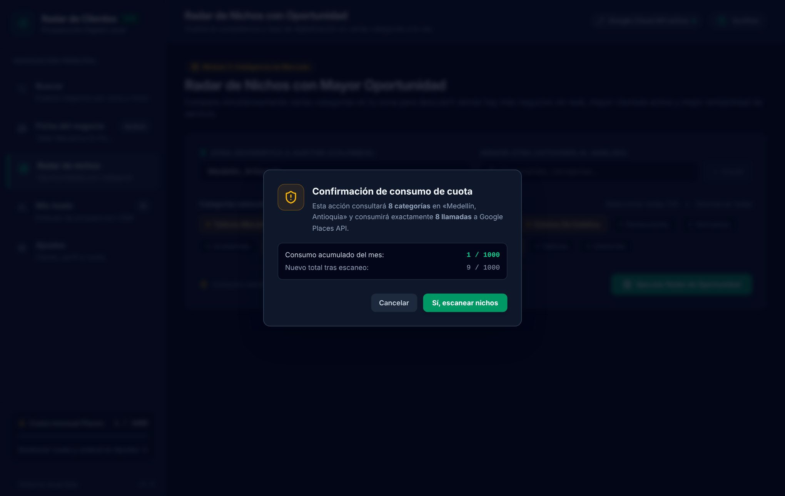
Arriba aparece un resumen con los tres mejores nichos de la zona y el servicio que conviene vender en cada uno. Los números salen de negocios reales de Google (hasta 20 por categoría).
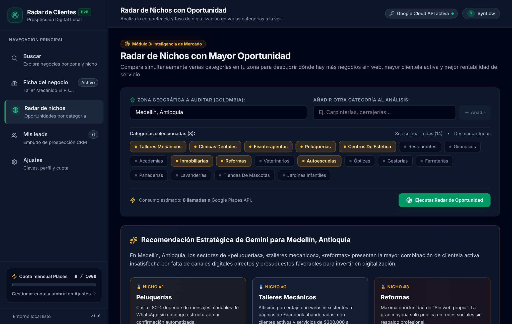
Más abajo, una tabla con cuántos negocios se encontraron, el porcentaje sin web propia, la valoración media, el servicio recomendado y la oportunidad. El botón Ver negocios te lleva directo a buscar esa categoría. Cada fila indica el origen de sus datos: Dato real (calculado con negocios de Google) o Estimado (valores de referencia del sector, cuando no hay clave de Google o la consulta falló). Una categoría estimada no debe pesar tanto en tu decisión como una con dato real.
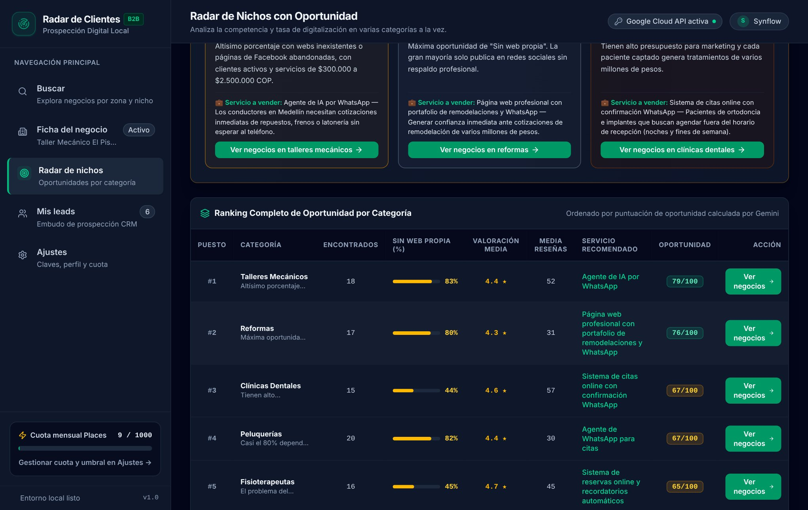
Aquí quedan los negocios que guardaste. Arriba hay un panel de métricas (negocios en el embudo, conversión, respuesta y valor estimado) que puedes plegar. Luego, un buscador por nombre, dirección, teléfono, correo o notas, y filtros por estado y nicho.
Arriba de las métricas hay un panel con a quién escribir hoy. Lo arma solo con lo que ya registraste (ver capítulo 07).
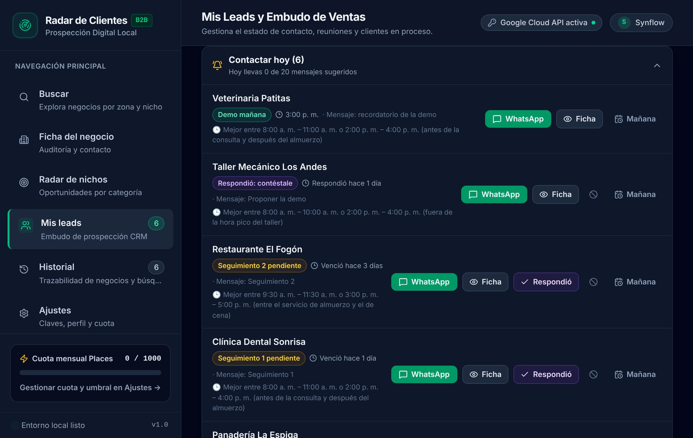
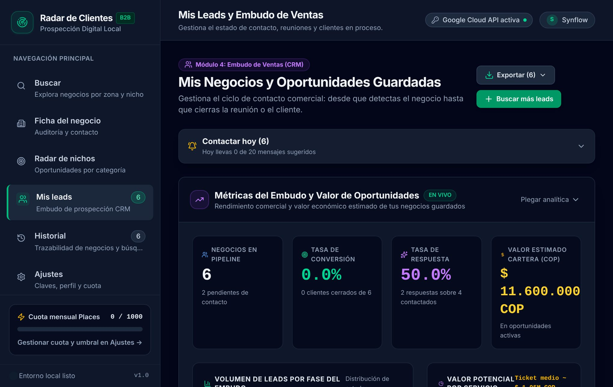
Una columna por etapa: Nuevo, Analizado, Contactado, Respondió, Reunión, Cliente y Descartado. Mueve cada negocio con el selector de su tarjeta.
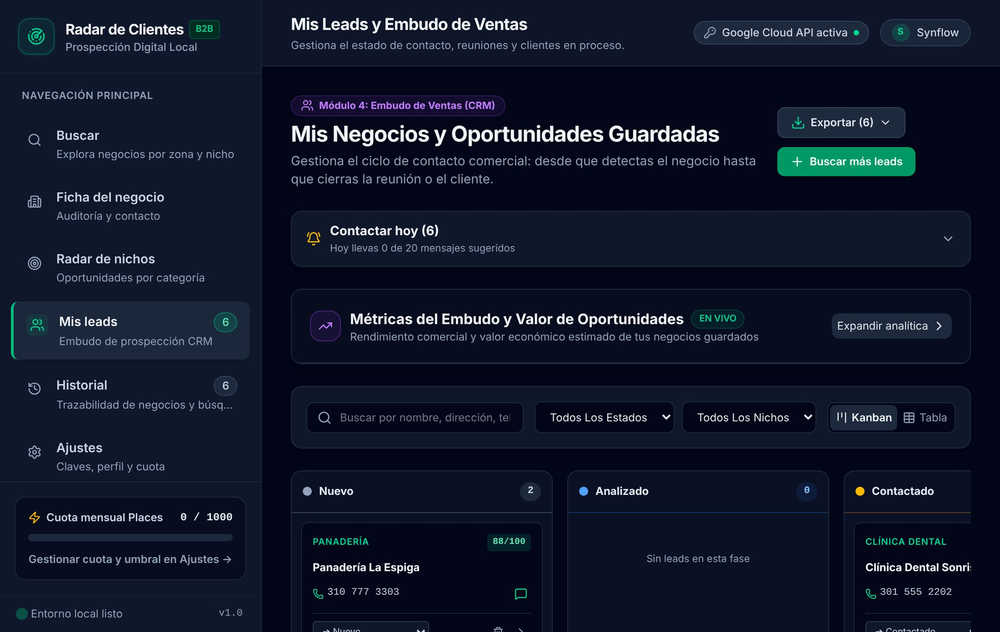
La tabla incluye el correo de cada lead, su estado, la presencia web y la oportunidad. El botón Exportar descarga la lista filtrada (nombre, teléfono, correo, web, puntaje, etapa, notas) en Excel (con hoja de resumen por etapa), PDF o CSV.
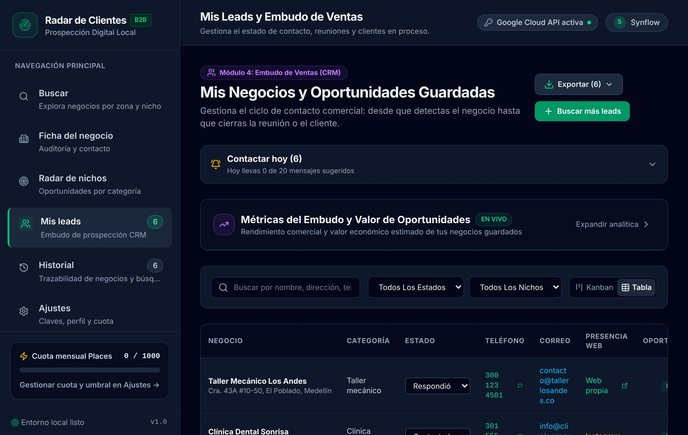
Escribir una vez casi nunca basta. La app arma cuatro mensajes y te recuerda cuándo toca cada uno. Tú siempre revisas y pulsas enviar: no hay envíos automáticos.
Al pulsar el botón de WhatsApp de un negocio (en Buscar, Mis leads, la ficha o «Contactar hoy») se abre su chat con un mensaje que incluye:
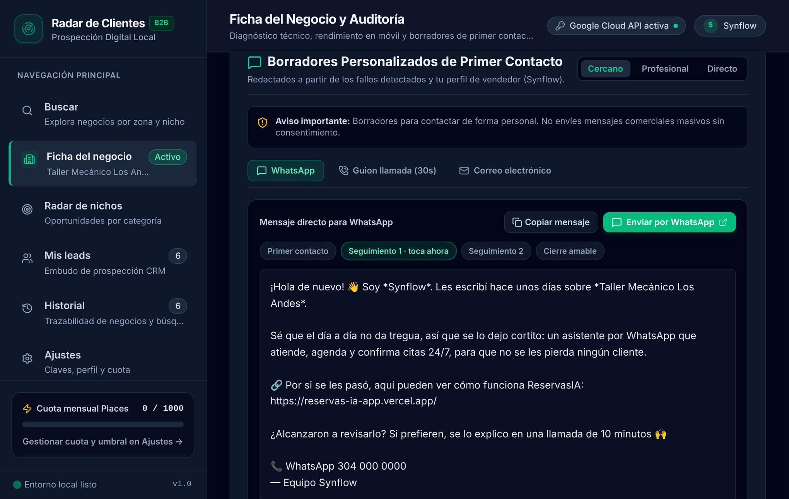
| Paso | Cuándo | Qué dice |
|---|---|---|
| Primer contacto | Al inicio | Presentación, oferta y enlace de ReservasIA. |
| Seguimiento 1 | 2 días después | Recordatorio breve y el enlace por si se les pasó. |
| Seguimiento 2 | 3 días después | Un beneficio concreto para su rubro y propuesta de demo. |
| Cierre amable | 4 días después | Último mensaje, sin presionar; respeta si no quieren más. |
Los botones de WhatsApp envían automáticamente el paso que toca, según los acercamientos que registraste. En la ficha puedes elegir otro paso con las pestañas. Todo existe en los tres tonos y también por correo:
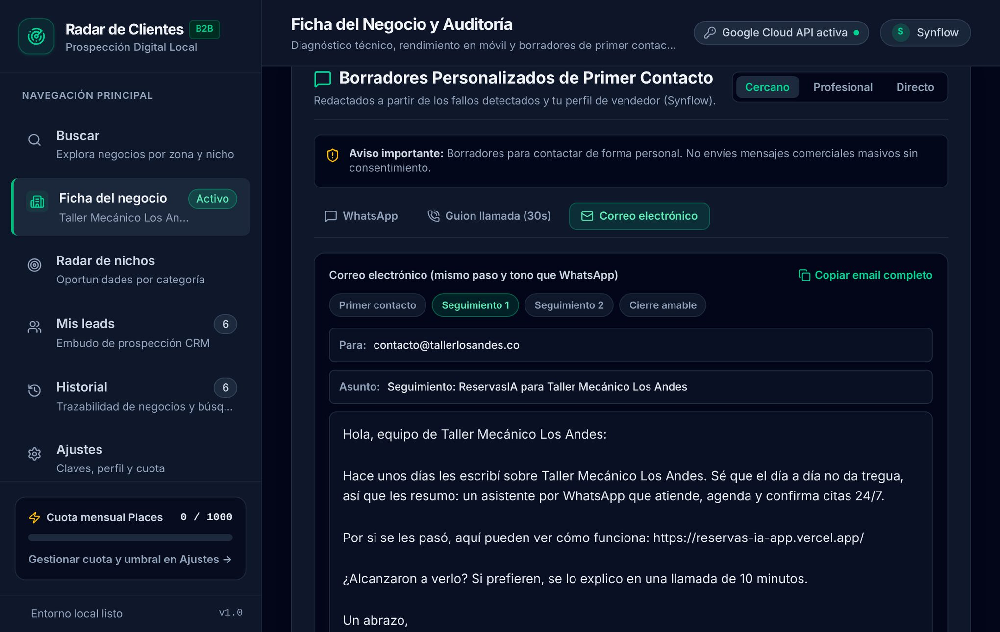
Abrir WhatsApp no demuestra que enviaste el mensaje. Al volver a la app aparece ¿Enviaste el mensaje?:
En Mis leads, el panel ordena lo que toca hacer. Si el negocio no tiene celular pero sí correo, el botón es Correo.
| Orden | Qué aparece |
|---|---|
| 1. Demo de hoy o mañana | Con botón para recordársela por WhatsApp. |
| 2. Respondieron | Negocios a los que debes contestar: es lo más urgente. |
| 3. Seguimientos vencidos | El paso que ya toca, con los días de retraso. |
| 4. Acciones y envíos sin confirmar | Fechas que programaste y chats abiertos sin confirmar. |
| 5. Primer contacto | Guardados que aún no han recibido mensaje, de mayor a menor oportunidad. |
En la ficha, la sección Seguimiento con el negocio (y la fila expandida del Historial) tiene:
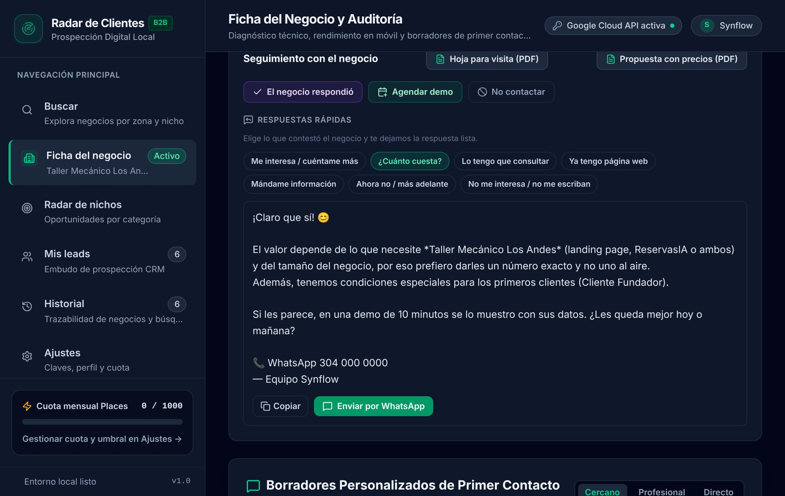
Cuando el negocio muestre interés, pulsa Agendar demo (en la ficha o en el Historial). Elige fecha, hora, duración y modalidad (videollamada, llamada o visita) y, si quieres, el enlace o el lugar.
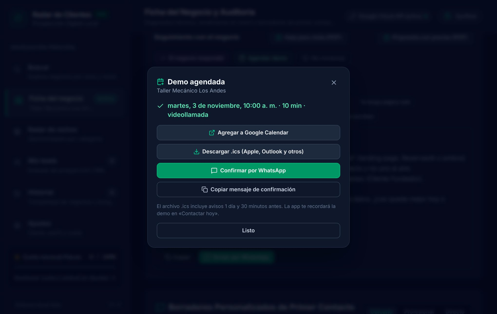
En la ficha hay dos PDF de una página, con datos reales del negocio (nunca cifras inventadas):
| Documento | Para qué sirve |
|---|---|
| Propuesta con precios | Para enviar después de la demo. Eliges qué servicios incluye (landing, ReservasIA o ambos) y agregas una nota. Trae lo que se vio en el negocio, qué incluye, la inversión, cómo empezar, las condiciones, la vigencia y tus datos con el QR de tu tarjeta. |
| Hoja para visita | Para llevar a una visita presencial o enviar: datos del negocio, puntajes de velocidad y problemas detectados (si ya lo analizaste), cómo ayudamos y tus datos. |
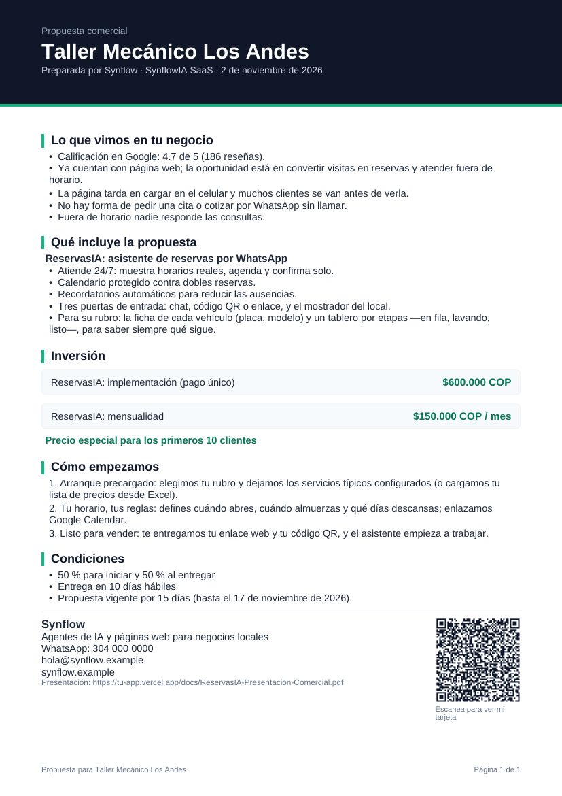
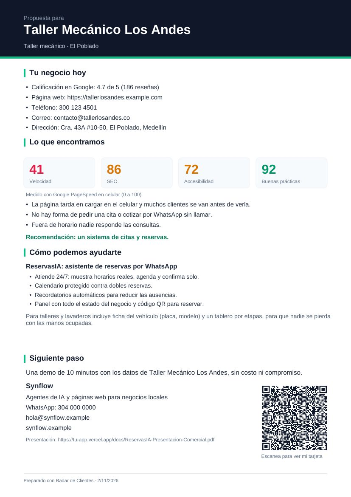
En Ajustes → Tarjeta digital escribes tu WhatsApp, una frase, tu correo y tu web. La app genera un enlace y un código QR. Quien lo abra ve una página con botones para escribirte por WhatsApp, llamarte, escribirte por correo, ver tu web y conocer ReservasIA, y Guardar contacto.
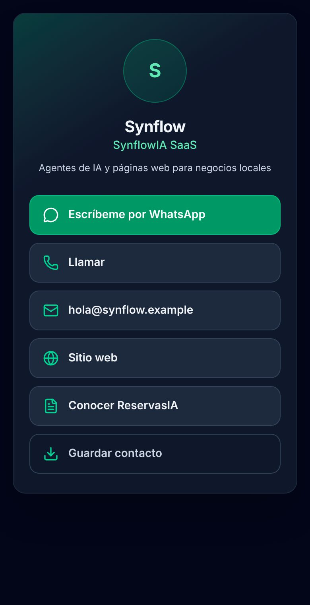
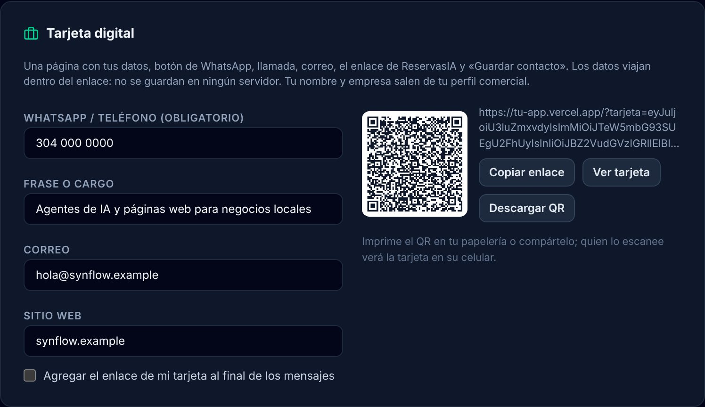
El Historial deja constancia de qué negocios has visto y de qué hiciste con cada uno, para no repetir contactos y saber en qué punto está cada negocio. Se llena solo, mientras trabajas.
| Estado | Qué significa |
|---|---|
| Solo visto | Abriste su ficha o lo analizaste, pero no usaste ningún canal de contacto. |
| Canal abierto, sin confirmar | Abriste WhatsApp, la llamada o su correo. La app no puede saber si enviaste el mensaje. |
| Acercamiento registrado | Tú dejaste registrado que enviaste la solicitud (ver más abajo). |
Pulsa la flecha de un negocio para ver su línea de tiempo. A la derecha elige el canal (WhatsApp, llamada, correo, visita presencial u otro), escribe una nota opcional, por ejemplo «envié propuesta de web», y pulsa Registrar.
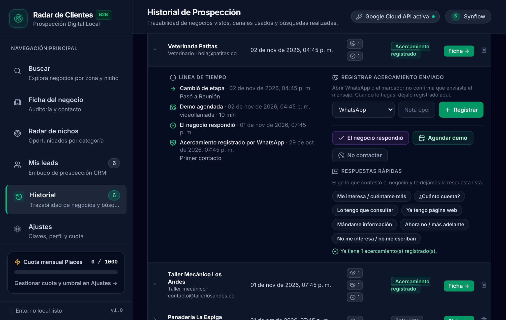
En la pestaña Búsquedas ves todas tus consultas. El botón Repetir te lleva a Buscar con esa zona y ese nicho ya escritos.
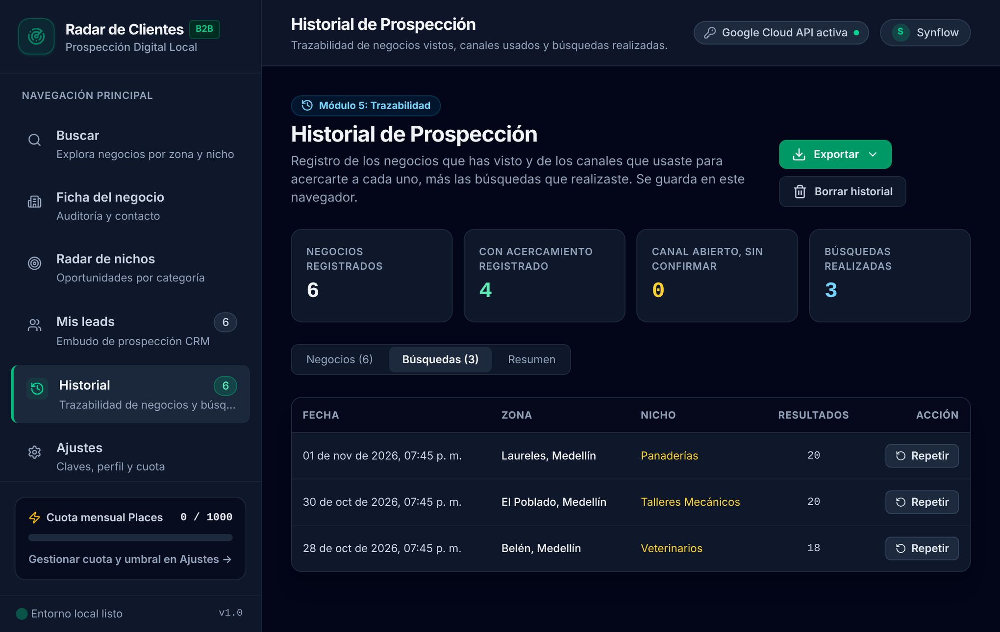
El botón Exportar (arriba a la derecha) genera el archivo con los negocios que ves en pantalla, respetando el filtro y el orden elegidos, más todas las búsquedas.
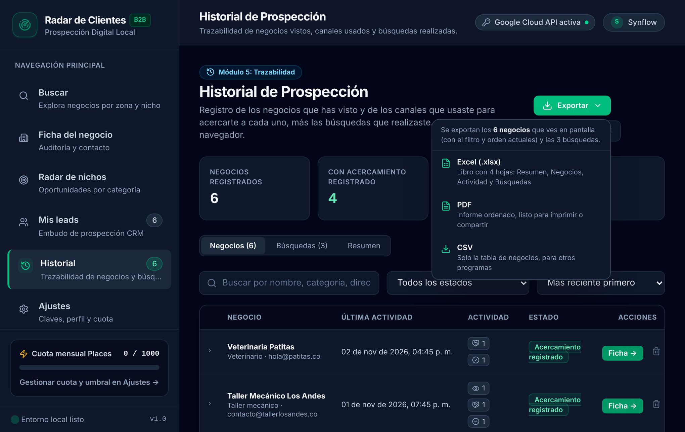
| Formato | Qué contiene y para qué sirve |
|---|---|
| Excel (.xlsx) | Libro con 4 hojas: Resumen (totales y negocios por categoría), Negocios (una fila por negocio con 27 columnas: contacto, web, valoración, oportunidad, estado, conteo por canal y último acercamiento), Actividad (una fila por acción, ideal para tablas dinámicas) y Búsquedas. Las fechas y los números son datos reales de Excel, con filtros y primera fila fija, para ordenar, filtrar y analizar sin retocar nada. |
| Informe ordenado en horizontal: resumen, tabla de negocios con su estado, lista de acercamientos registrados y búsquedas realizadas, con fecha de generación y número de página. Sirve para imprimir o compartir. | |
| CSV | Solo la tabla de negocios, para abrirla en otros programas. |
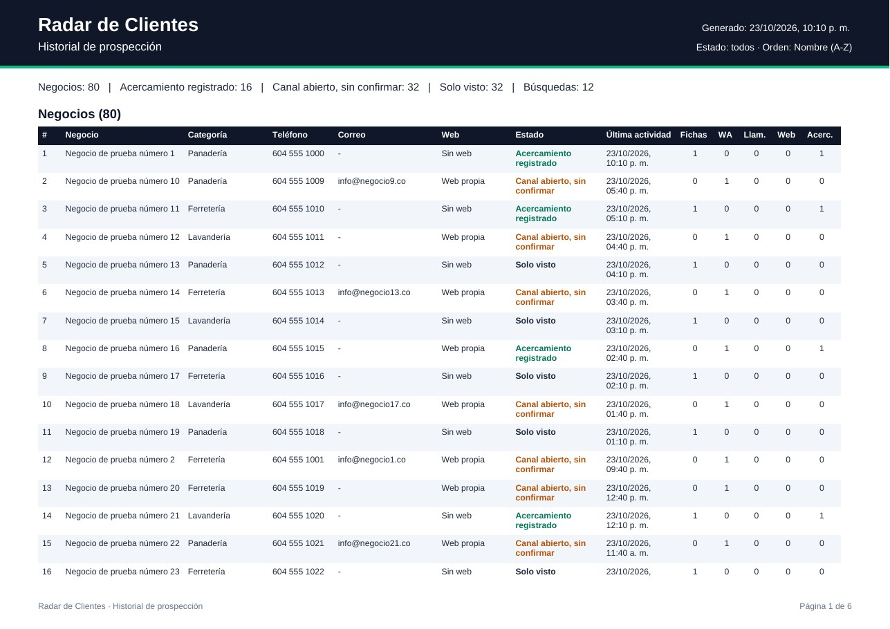
La pestaña Resumen calcula, con tu historial, los mensajes enviados, los negocios contactados, cuántos respondieron y cuántas demos y cierres hubo en los últimos 7 días, 30 días o todo el historial. Además muestra:
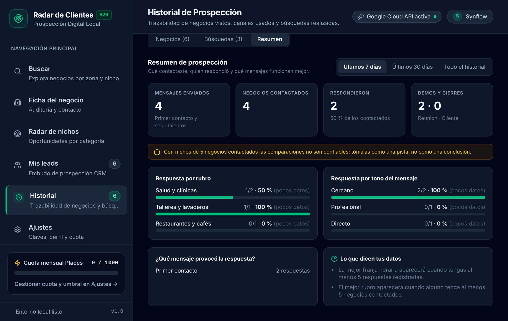
En Ajustes configuras lo que personaliza tus mensajes y protege tus datos. Completa estos bloques antes de empezar:
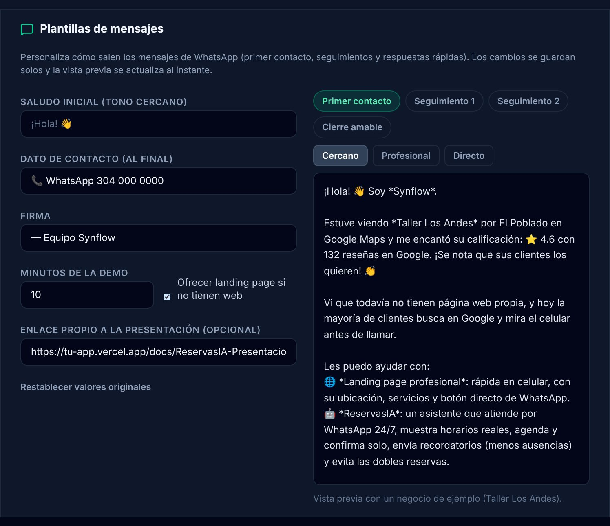
Al activarlos, la app envía un aviso al día (entre 8 a. m. y 7 p. m.) con las demos próximas, los negocios que respondieron y los seguimientos vencidos. Solo funcionan mientras la app está abierta (en el computador también en segundo plano); en el celular no llegan si el sistema la cierra.
Tus datos viven solo en tu navegador, así que la copia de seguridad es tu red de protección.
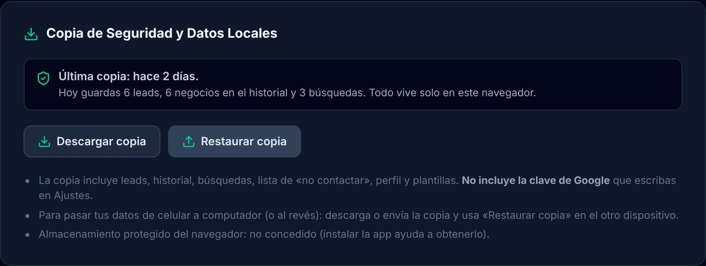
Muestra los negocios bloqueados con su fecha y motivo. Quitar permite volver a contactarlos (úsalo solo si ellos lo piden).
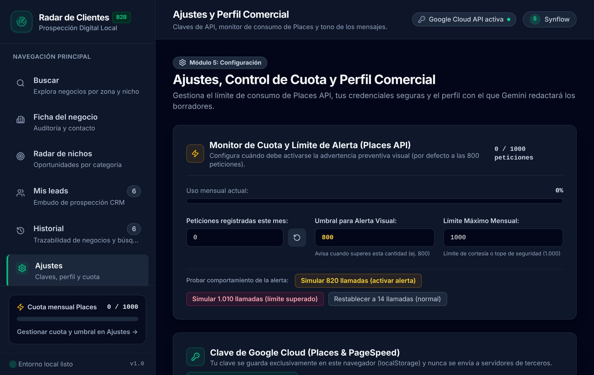
¿Por qué salen datos de ejemplo? Si Google no responde o hay un problema con la clave, la app muestra negocios de demostración y un aviso. Avisa al responsable técnico.
¿Un negocio no tiene correo y debería? Pulsa el botón de reintentar; si sigue sin aparecer, búscalo en su perfil de Google Maps o contáctalo por WhatsApp.
¿Por qué una categoría del Radar dice «Estimado»? Porque no se pudo consultar Google para esa categoría (sin clave o error de Google). Sus números son una referencia del sector, no una medición.
¿Por qué no aparecen las notas de velocidad? Google PageSpeed no pudo medir esa web o se alcanzó su límite de consultas. La ficha muestra el motivo; pide al responsable técnico que revise que «PageSpeed Insights API» esté habilitada.
En WhatsApp veo cuadros con «?» en lugar de emojis. Ocurre con algunas versiones de la app de WhatsApp para Windows. En Ajustes → Plantillas de mensajes elige WhatsApp Web (es lo que se usa por defecto en computador) o desactiva Usar emojis.
¿Por qué no veo mis leads en otro celular o computador? Los datos se guardan en cada navegador. Descarga una copia en el primero y usa Restaurar copia en el segundo.
¿Puedo adjuntar el PDF en el chat de WhatsApp? No desde un enlace: el mensaje lleva el enlace de ReservasIA (WhatsApp lo muestra como vista previa). Si quieres mandar además la presentación en PDF, en el celular Enviar con el PDF adjunto (ficha) abre la hoja de compartir con el archivo.
¿La propuesta salió sin precios? Escríbelos en Ajustes → Precios y propuesta comercial. La app nunca inventa cifras.
¿Por qué un negocio desapareció de «Contactar hoy»? Respondió y ya lo atendiste, quedó en Reunión, Cliente o Descartado, lo marcaste como «no contactar», o lo pospusiste con «Mañana».
¿Los avisos llegan con la app cerrada? No. Sin un servidor, solo salen mientras la app esté abierta.
¿Puedo usarlo desde el celular? ¿Veo la cuota? Sí a ambas: la app se adapta a pantallas pequeñas, y en la parte inferior del menú y en Ajustes hay un medidor de consultas del mes.